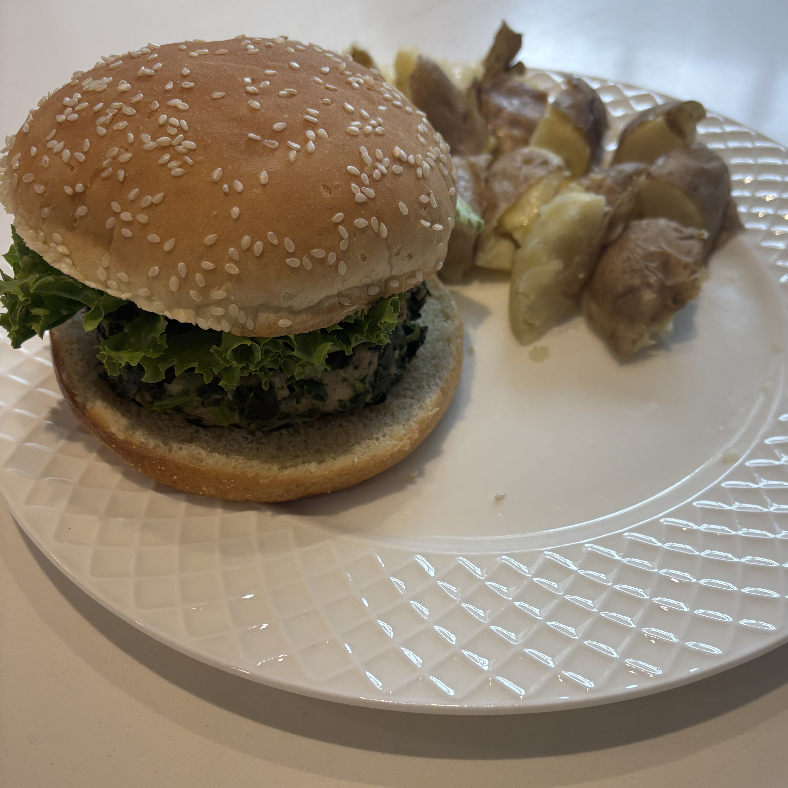

Home
Turkey Burger

Ingredients
- 12 oz frozen spinach
- 8 oz lean ground turkey
- 1/4 cup finely chopped red onion
- 2 clove minced garlic
- 1 whole beaten egg
- 2 tbsp whole wheat bread crumbs
- black pepper
- 2 tbsp crumbled reduced fat feta cheese
- 1 tbsp olive oil
Steps
- Squeeze excess water from the thawed spinach.
- In a large bowl, mix together the drained spinach, ground turkey, red onion, garlic, beaten egg, breadcrumbs, feta, and pepper.
- Form into 4 equal patties.
- Heat olive oil in a large skillet over medium heat. Cook patties 4-5 minutes per side until cooked through and deep golden brown.